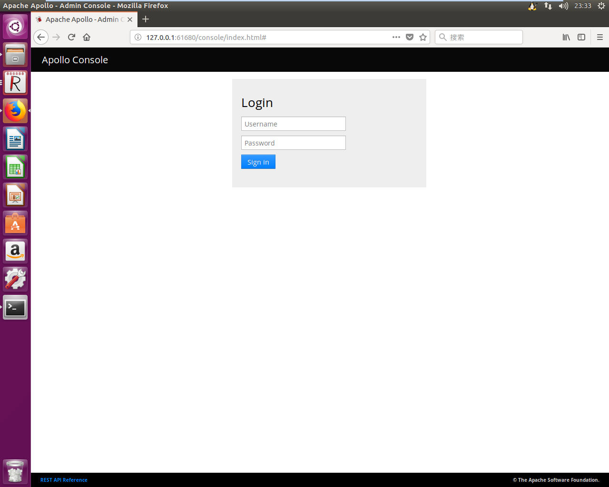
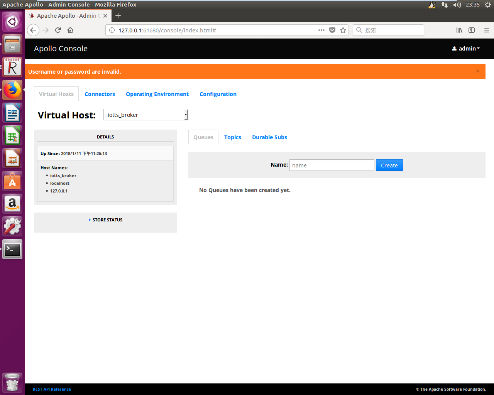

前言
现在物联网这么火，当然不能落伍，MQTT极有可能成为物联网应用最广的协议，因此需要一个MQTT测试环境就很有必要了
开发环境
系统： Ubuntu 16.04.3 LTS
代理服务器 ：Apache-Apollo-1.7.1
准备工作
1. 安装Java环境
由于搭建Apollo环境变量需要有JAVA_HOME，这个时候需要安装JDK,具体安装参考《Ubuntu安装JDK1.8.0并配置环境变量》
2. Apache-Apollo-1.7.1下载及解压
首先是下载Apache-Apollo，下载页面：http://www.apache.org/dyn/closer.cgi?path=activemq/activemq-apollo/1.7.1/apache-apollo-1.7.1-unix-distro.tar.gz
或者输入下面命令：
1 | iotts@jacklu:~$ cd /home/iotts/ |
解压源码包：1
tar -zxvf apache-apollo-1.7.1-unix-distro.tar.gz
配置
进入apache-apollo-1.7.1/bin目录1
cd apache-apollo-1.7.1/bin/
输入./apollo可以查看帮助1
2
3
4
5
6
7
8
9
10iotts@jacklu:~/apache-apollo/apache-apollo-1.7.1/bin$ ./apollo
usage: apollo [--log <log_level>] <command> [<args>]
The most commonly used apollo commands are:
create creates a new broker instance
disk-benchmark Benchmarks your disk's speed
help Display help information
version Displays the broker version
See 'apollo help <command>' for more information on a specific command.
创建MQTT服务器
创建一个Broker示例：./apollo create iotts_broker。执行后就会在bin目录下创建 iotts_broker文件夹。(MQTT服务器都是叫Broker)1
2
3
4
5
6
7
8
9
10
11
12iotts@jacklu:~/apache-apollo/apache-apollo-1.7.1/bin$ ./apollo create iotts_broker
Creating apollo instance at: iotts_broker
Generating ssl keystore...
You can now start the broker by executing:
"/home/iotts/apache-apollo/apache-apollo-1.7.1/bin/iotts_broker/bin/apollo-broker" run
Or you can setup the broker as system service and run it in the background:
sudo ln -s "/home/iotts/apache-apollo/apache-apollo-1.7.1/bin/iotts_broker/bin/apollo-broker-service" /etc/init.d/
/etc/init.d/apollo-broker-service start
后面会有提示怎么启动服务器，以及创建一个service。
启动Apollo ：1
2
3
4
5
6
7
8
9
10
11
12
13
14
15
16
17
18
19
20
21
22
23
24
25
26iotts@jacklu:~/apache-apollo/apache-apollo-1.7.1/bin$ iotts_broker/bin/apollo-broker run
_____ .__ .__
/ _ \ ______ ____ | | | | ____
/ /_\ \\____ \ / _ \| | | | / _ \
/ | \ |_> > <_> ) |_| |_( <_> )
\____|__ / __/ \____/|____/____/\____/
\/|__| Apache Apollo (1.7.1)
Loading configuration file '/home/iotts/apache-apollo/apache-apollo-1.7.1/bin/iotts_broker/etc/apollo.xml'.
INFO | OS : Linux 4.10.0-42-generic (Ubuntu 16.04.3 LTS)
INFO | JVM : Java HotSpot(TM) Server VM 1.8.0_151 (Oracle Corporation)
INFO | Apollo : 1.7.1 (at: /home/iotts/apache-apollo/apache-apollo-1.7.1)
INFO | OS is restricting the open file limit to: 100000
INFO | Accepting connections at: tcp://0.0.0.0:61613
INFO | Accepting connections at: tls://0.0.0.0:61614
INFO | Starting store: leveldb store at /home/iotts/apache-apollo/apache-apollo-1.7.1/bin/iotts_broker/data
INFO | Accepting connections at: ws://0.0.0.0:61623/
INFO | Accepting connections at: wss://0.0.0.0:61624/
INFO | virtual host startup is waiting on store startup
INFO | virtual host startup is no longer waiting. It waited a total of 1 seconds.
INFO | broker startup is waiting on start jetty webserver
INFO | Administration interface available at: https://127.0.0.1:61681/
INFO | Administration interface available at: http://127.0.0.1:61680/
INFO | broker startup is no longer waiting. It waited a total of 7 seconds.
查看打印信息即可知道MQTT要连接的端口和管理页面端口。
然后打开浏览器上，输入 http://127.0.0.1:61680/ 或 https://127.0.0.1:61681/
即可进入 Apollo Console 窗口。

默认的登录id和密码是 admin 和 password
